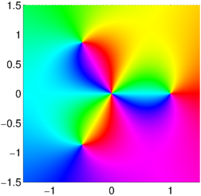
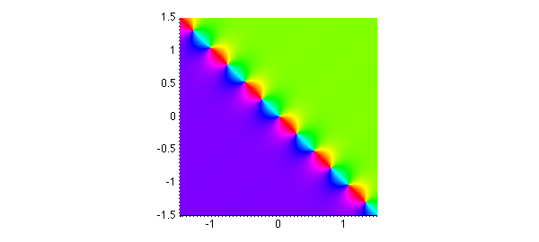

function PortraitsWithPoles
Phase portraits for analytic functions
Here is a phase portrait [1] of the function $f(z) = z^2(z^3-1) $ on the square $[-1.5,1.5,-1.5,1.5]$:
ff = @(z) z.^2.*(z.^3-1); d = 1.5*[-1 1 -1 1]; f = chebfun2(ff,d); plot(f), axis(d), axis square on

Phase portraits for functions with poles
Now suppose the zeros of $f$ at the origin were poles instead of zeros. Then Chebfun2 couldn't represent $f$, so we couldn't do a phase portrait directly. However, for a phase portrait, all that matters is the phase! So we should be able to replace $f$ by another function with the same phase but smooth modulus, like $f/(1+|f|^2)$. I've implemented this with a function called "smash" (picking a name reminiscent of a command in TeX).
function g = smash(f) absf = abs(f); g = f./(1+absf.^2); % smooth function with same phase as f g(isnan(g)) = 0; % give 0 rather than NaN at poles end
It works! Notice that in the middle, yellow is clockwise of red rather than counterclockwise, indicating poles rather than zeros.
ff = @(z) z.^(-2).*(z.^3-1); g = chebfun2(@(z) smash(ff(z)),d); plot(g), axis(d), axis square on

For another example, here is $\tan((3+3i)z)$. Compare Figure 3.20 of [1].
hh = @(z) tan((3+3i)*z); h = chebfun2(@(z) smash(hh(z)),d); plot(h), axis(d), axis square on

These experiments are promising. In fact, I am not sure how robust the technique is; some careful exploration may be needed, and one might want to loosen the Chebfun2 convergence criterion, since the aim here is only to draw a plot in any case. Also, the "smash" process as I've defined it isn't scale-invariant; instead of $1$ in the denominator, there should be a number representing a typical magnitude of $f$.
Perhaps it is worth emphasizing that although it is appealing to be able to use Chebfun2 to draw phase portraits for a wider range of functions than one might have imagined, ultimately there is no good reason for the phase portraitist to use Chebfun2. A phase portrait is just a pixel-by-pixel image; it gets no benefit from the global high-accuracy representations of Chebfun2.
References
- E. Wegert, Visual Complex Functions: An Introduction with Phase Portraits, Birkhauser/Springer, Basel, 2012.
end